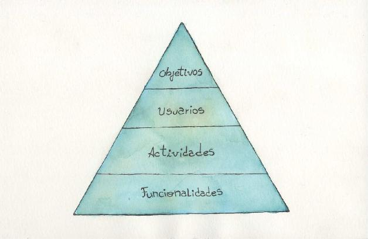
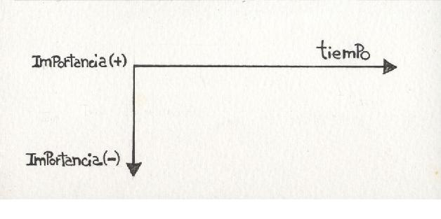
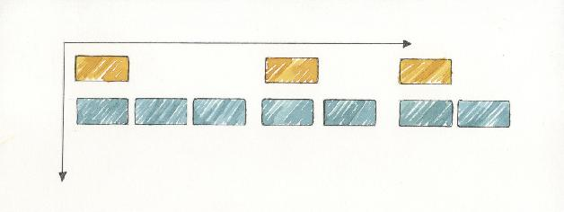
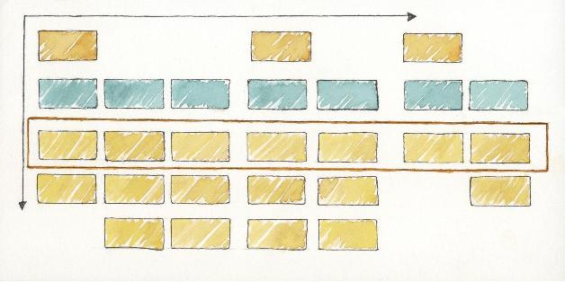
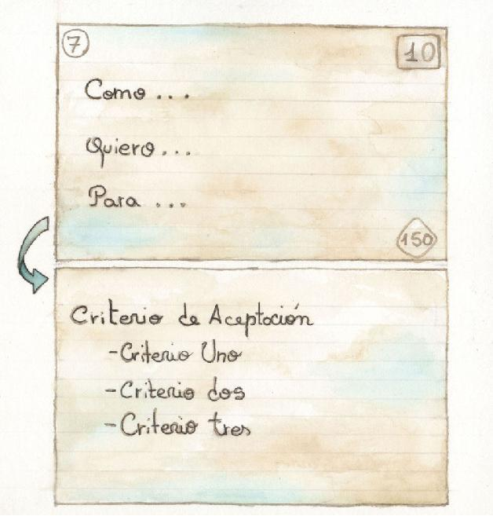

Delineando el alcance
Todo proyecto, independientemente de la disciplina a la que pertenezca, comienza por una visión. La misma constituye el punto de partida y la motivación para realizar el proyecto. Puede que dicha visión esté formalmente documentada o no, pero más allá de esto es fundamental que todos los integrantes del equipo la conozcan, pues es el instrumento que debería guiarnos a la hora de tomar decisiones. Cuando vamos al ámbito de los métodos ágiles, estas afirmaciones son igual de válidas, pero aquí lo distintivo es la estrategia para convertir esa visión en un entregable de valor para el cliente. El primer paso para transformar la visión en producto es la definición del alcance. Este es el foco del presente capítulo.
Alcance, análisis y planificación
La definición de alcance es parte de la actividad de análisis del proyecto. En este proceso de análisis lo fundamental es entender la necesidad del cliente y su negocio. Al mismo tiempo, en ciertas ocasiones el alcance de un proyecto puede ser variable y, en ese caso, la definición de alcance se ve naturalmente “mezclada” con planificación. Es por esto que algunas de las técnicas tratadas en este capítulo serán también referenciadas en el capítulo “Planificación constante”.
Backlog de producto
El primer paso en el proceso de materialización de la visión es la definición del alcance. En términos ágiles, está representado por el backlog de producto11. Este backlog de producto es una lista de ítems que representa todo el trabajo necesario para concretar la visión. En términos tradicionales de gestión, el backlog podría ser análogo a una WBS12 orientada a producto. Sin embargo, hay una diferencia entre las WBS de los enfoques tradicionales, generalmente compuestas por todas las tareas a realizar, y el backlog del producto de los métodos ágiles, el cual debiera contener solo ítems que tengan valor real para el cliente.
Dependiendo del método particular que se utilice, estos ítems podrán tomar distinta forma, pero como ya hemos mencionado, en todos los casos deberán ser los que el cliente valore.
Algo fundamental para los métodos ágiles es que el cliente priorice los ítems de backlog. Luego de un trabajo de análisis, dichos ítems deberán ser estimados por el equipo de desarrollo. De esta forma tendremos la información necesaria para planificar la construcción de nuestro producto.
Para generar el backlog de producto a partir de la visión, existe una técnica muy popular en los ambientes ágiles denominada Visual Story Mapping.
Visual story Mapping
Esta técnica de análisis, propuesta por Jeff Patton [Patton 2005], parte de la idea de que a nivel organizacional trabajamos en un contexto de negocio con determinados objetivos que requieren de ciertos procesos de negocio, que son llevados a cabo por personas que realizan ciertas actividades. Para la ejecución de estas actividades, se realizan ciertas tareas utilizando herramientas y es ahí donde entra en juego nuestro producto/software. A partir de esto tenemos una jerarquía: proceso de negocio (objetivo) > actividades > funcionalidades de nuestro software.
Esta técnica se aplica en sesiones de trabajo con los usuarios y los miembros del equipo de desarrollo. En líneas generales podemos decir que la técnica consta de cuatro pasos:
Figura 3.1. Vista conceptual del Story Map

1. Identificar los procesos de negocio (objetivo).
2. Identificar los usuarios.
3. Identificar las actividades de los usuarios.
4. Identificar las funcionalidades del software.
Para aplicar la técnica es necesario contar con marcadores, cinta de papel, tarjetas (o notas autoadhesivas) de al menos tres colores distintos y una superficie de trabajo (una pizarra o mesa amplia). Sobre la superficie de trabajo trazaremos dos ejes utilizando cinta de papel: el eje horizontal representará el tiempo, mientras que el eje vertical representará importancia para el negocio (cuanto más arriba, más importante).
Figura 3.2. Superficie de trabajo para el VSM

Entonces comenzaremos ubicando en la parte superior las tarjetas que constituyen los distintos procesos de negocio. A continuación, en un segundo nivel (utilizando tarjetas de otro color), ubicaremos las tarjetas con las distintas actividades que conforman el proceso de negocio, prestando atención a mantener la secuencia en que dichas actividades deben ejecutarse.
Figura 3.3. Identificación de procesos de negocio y actividades

Por último, en un tercer nivel, ubicaremos las funcionalidades que nuestra aplicación deberá proveer para que puedan completarse las actividades identificadas previamente. Es común que para completar una actividad dada, el sistema deba proveer más de una funcionalidad. Es por eso que nos encontraremos con varios niveles de tarjetas de funcionalidades, siendo los de más arriba, los más importantes. Del mismo modo puede suceder que algunas de las funcionalidades resulten indispensables para el negocio mientras que otras sean complementarias. Es importante atender a estas cuestiones al ubicar las tarjetas con las funcionalidades del sistema.
El primer nivel de tarjetas debería incluir aquellas que constituyen el conjunto mínimo de funcionalidades necesario para completar el flujo de negocio.
Figura 3.4. Visión final del Visual Story Map

Al finalizar la actividad de Visual Story Mapping tendremos:
• El mapa de funcionalidades que nuestra aplicación deberá implementar y no solo eso sino que tendremos una visión global de como cada funcionalidad encaja en el contexto de negocio que pretendemos resolver.
• El conjunto de funcionalidades que constituyen nuestro backlog de proyecto, siendo las funcionalidades del primer nivel las de mayor prioridad.
El resultado del Visual Story Mapping es un mapa “físico” de las stories que constituyen el sistema. Generalmente este mapa no se descarta, sino que es colgado en algún lugar visible dentro del espacio de trabajo de equipo, para tener como referencia de contexto a lo largo de todo el proyecto.
Con esto ya estamos en condiciones de estimar y planificar el desarrollo de la aplicación, pero esas son cuestiones que trataremos en el siguiente capítulo.
User stories
Al describir la técnica de Visual Story Mapping hemos hablado de funcionalidades de la aplicación. En los contextos ágiles dichas funcionalidades suelen representarse con user stories. Alguien podría pensar que las user stories son especificaciones de requerimientos, lo cual no es correcto. La definición purista indica que una user story es un recordatorio de algo relevante que debe hablarse con el usuario, lo cual hace que a lo sumo las user stories puedan considerarse el título de un requerimiento.
Las user stories tienen un forma muy simple, consiste en una oración escrita en el lenguaje del negocio que generalmente se expresa utilizando el siguiente patrón:
Como <rol> quiero <funcionalidad> para <beneficio> Algunos ejemplos comunes de user stories para un portal de comercio electrónico podrían ser:
• Como comprador quiero buscar productos por rango de precio para ver solo aquellos que estén a mi alcance.
• Como vendedor quiero poder duplicar una publicación pasada para evitar cargar toda la información otra vez.
• Como moderador quiero editar las publicaciones para asegurarme que respeten las políticas de la empresa.
Las user stories son un artefacto propuesto por Extreme Programming, cuyo uso y popularidad se ha extendido mucho más allá de este método particular. Posiblemente parte de su gran popularidad se deba al libro de Mike Cohn [Cohn 2004], el cual es una referencia obligada para quienes deseen ahondar en el tema.
User Stories vs. Casos de uso
Es común que en una primera aproximación tienda a verse a las user stories como análogas a los casos de uso del Proceso Unificado, en el sentido que ambos artefactos describen en cierto modo una funcionalidad del sistema. Esta analogía no parece apropiada, ya que más allá de la forma de estos artefactos, hay una diferencia radical en el propósito de cada uno, dado por el contexto metodológico en el cual se usan.
Habitualmente, al trabajar con casos de uso se tiende a generar documentos que especifiquen con bastante nivel de detalle la funcionalidad que el programador debe implementar. Por su parte, las user stories son intencionalmente vagas, pues lo que buscan es promover el diálogo entre quien debe implementar la funcionalidad y quien la ha requerido. Es justo esta diferencia de enfoque la que lleva a que en general no se utilicen casos de uso al trabajar con métodos ágiles.
N.P.
Propiedades INVEST
Al hablar de user stories se suele hacer referencia a ciertas propiedades deseables que estas debieran cumplir. Dichas propiedades enunciadas en inglés forman la sigla INVEST:
• Independent (independiente): en el sentido de independiente de las demás; esto nos brindará más libertad a la hora de planificar y al mismo tiempo debería ayudarnos a evitar ambigüedades a la hora de estimar.
• Negotiable (negociable): una user story no es un contrato de funcionalidad, pues sus detalles van evolucionando y definiéndose conjuntamente entre el cliente y el desarrollador a medida que se desarrolla.
• Valuable (valiosa): si una story no tiene valor para el cliente entonces no tiene razón de ser.
• Estimable (estimable): si una story no puede ser estimada por el equipo entonces no es posible que este pueda asumir un compromiso para su construcción.
• Small (pequeña): al ser pequeñas serán más fáciles de estimar, tendrán menos ambigüedades y darán una mayor flexibilidad a la hora de planificar.
• Testable (que puede probarse): tenemos que poder probarla para que podamos definir una condición de aceptación, sin esto ¿cómo saber cuando está terminada?
Más allá que estas propiedades se han popularizado con las user stories, la realidad es que son propiedades deseables para todo requerimiento, estemos o no trabajando con un enfoque ágil.
Story Cards
Durante el proceso de análisis, ya sea que se use la técnica de Visual Story Mapping o no, las user stories suelen escribirse en fichas bibliográficas que se denominan Story Cards. Cada story card tiene el enunciado de la user story (Como <rol> quiero <necesidad> para <beneficio>), el valor de negocio que tiene la story y la cantidad de story points que el equipo le asignó en la estimación.
Las user stories brindan muy poca información respecto de la funcionalidad, por eso es que se suele decir que son simplemente un recordatorio de algo que debe hablarse con el cliente. En consecuencia, lo importante no son las user stories en sí, sino la discusión que se da en torno a ellas.
Por último, para dejar bien en claro las expectativas respecto de la funcionalidad provista por cada user story, al dorso de la story card se suelen escribir las condiciones de aceptación de la story, las cuales funcionan como una especificación para quien tenga que implementarla.
En resumen, estas tres particularidades suelen ser referidas en inglés como CCC:
• Card: la tarjeta física donde se escriben las stories.
• Conversation: la discusión que debe darse entre el cliente y el equipo de desarrollo en torno a cada user story.
• Confirmation: los criterios de aceptación que verifican el cumplimiento de las user stories.
Figura 3.5. Story Card

Épicas y Temas
En una etapa temprana del proyecto es común que no se tenga demasiado detalle sobre algunas funcionalidades. Más allá de esto, puede que ya se sepa que algunas funcionalidades serán muy grandes y seguramente requieran más de una iteración para ser implementadas. A estas user stories “grandes”, que por serlo no cumplen con las propiedades INVEST, se las suele llamar épicas.
Por otro lado, en ocasiones resulta útil, ya sea por cuestiones de negocio o de planificación, agrupar conjuntos de user stories solo para facilitar su identificación. Estos conjuntos de user stories suelen denominarse temas.
Visual Story Mapping y User Stories
Al hacer Visual Story Mapping es común enunciar las funcionalidades de la aplicación como user stories, pero sin entrar en mayor detalle que su enunciado y su prioridad. O sea, tendremos una story card que ubicaremos en el mapa que solo contendrá el enunciado de la story y su valor de negocio. A esta altura la story card no tendrá condiciones de aceptación, pues estamos en un etapa muy temprana donde recién estamos definiendo qué debe hacer nuestra aplicación. Incluso es posible que algunas user stories no cumplan con el criterio INVEST o directamente sean épicas.
Otras técnicas
Existen algunas otras técnicas de uso común en contextos ágiles para la identificación del alcance del proyecto.
Una de estas técnicas es la conocida como Impact Mapping, desarrollada por Gojko Adzic [Adzic2012]. Esta técnica va más allá de la identificación del alcance, trabaja sobre la planificación estratégica, con un foco importante en la comunicación y colaboración entre los involucrados técnicos y de negocio.
Otra técnica de análisis ágil es la denominada Product Canvas [Pichler 2013]. Esta, al igual que el Visual Story Mapping propone una alternativa al clásico Product Backlog lineal. La misma hace un importante foco en los destinatarios del software en construcción y está basada en varios elementos visuales que se ubican sobre un canvas físico.
Por último, nos parece relevante destacar que más allá de las técnicas aquí mencionadas, hay otras herramientas tradicionales como los diagramas UML de clases, actividades y estados, que suelen resultar muy útiles para comprender el dominio de un negocio. Asimismo, es importante destacar que cuando se utilizan diagramas UML, los mismos no se suelen generar utilizando software, sino que se dibujan de manera informal en pizarras o papel, pues el fin es facilitar el entendimiento y no la documentación.
En resumen
En este capítulo hemos analizado un conjunto de técnicas y artefactos de uso común al trabajar con métodos ágiles. Como puede notarse en la descripción de cada técnica, se propone trabajar cara a cara con el cliente, valiéndose de herramientas físicas. Esto no impide que luego de cada actividad todo sea volcado en algún software, pero es importante que durante las sesiones de trabajo se utilicen las herramientas físicas (tarjetas, notas autoadhesivas y otras), puesto que permiten reacomodar elementos con facilidad, experimentando distintas alternativas.
Con lo visto en este capítulo hemos presentado el enfoque ágil para entender las necesidades de nuestro cliente y su negocio. Asimismo, como parte de este proceso de entendimiento, hemos definido un conjunto de artefactos que nos servirán como entrada para las siguientes actividades del proceso de construcción.